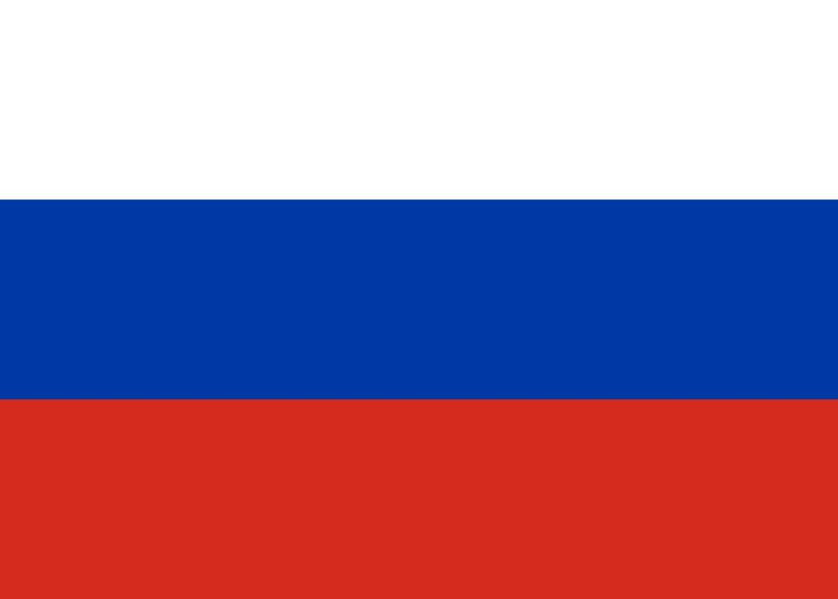

Russie

Création: 1957
Bases de lancément:
-
Baikonour Cosmodrome, Kazakhstan
-
Plesetsk Cosmodrome, Arkhangelsk
-
Vostochny Cosmodrome, Amur
Ce programme a commencé en octobre 1957, avec le lancement du premier satellite artificiel de l'histoire, Sputnik 1, suivi par le premier etre vivant dans le space, la chienne Laika, 1 mois après.
Ils ont également été les premiers a envoyer un humain dans le space, Yuri Gagarin, dans la mission Vostok 1 en 1961. La Russie reste aujourd'hui la deuxième puissante spatiale mondiale, avec une importante actuation dans la SSI.
Les companies
Actuellement, l'agence spatiale statale, Roskosmos, reste la principale companie de lancement, à l'aide de companies comme RKT progress qui construisent leur principale famille de fusées, Soyuz, Energia qui construise leur vaisseau spatiale habité, également appellé Soyuz, d'entres autres sous-companies.